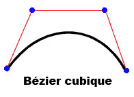
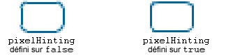

| Package | flash.display |
| Classe | public final class Graphics |
| Héritage | Graphics |
| Version du langage: | ActionScript 3.0 |
| Versions du moteur d’exécution: | AIR 1.0, Flash Player 9, Flash Lite 4 |
graphics correspondant à un objet Graphics. Vous trouverez ci-dessous quelques-unes des fonctionnalités d’aide à la visualisation qui sont à votre disposition : drawRect(), drawRoundRect(), drawCircle() et drawEllipse().
Il est impossible de créer un objet Graphics directement à partir du code ActionScript. Si vous appelez new Graphics(), une exception est renvoyée.
La classe Graphics ne gère pas les sous-classes.
Plus d’exemples
Dessin de formes à l’aide des méthodes intégrées
Création de lignes et de remplissages en dégradé
Définition d’un objet Matrix à utiliser avec un dégradé
Utilisation de la classe Math avec les méthodes de dessin
Exemple d’utilisation de l’API de dessin : générateur algorithmique d’effets visuels
Informations complémentaires
 Masquer les propriétés publiques héritées
Masquer les propriétés publiques héritées Afficher les propriétés publiques héritées
Afficher les propriétés publiques héritées| Méthode | Défini par | ||
|---|---|---|---|
beginBitmapFill(bitmap:BitmapData, matrix:Matrix = null, repeat:Boolean = true, smooth:Boolean = false):void
Remplit une zone de tracé en utilisant une image bitmap. | Graphics | ||
Spécifie un remplissage simple d’une couleur que des appels ultérieurs à d’autres méthodes Graphics (telles que lineTo() ou drawCircle()) utilisent lors du dessin. | Graphics | ||
beginGradientFill(type:String, colors:Array, alphas:Array, ratios:Array, matrix:Matrix = null, spreadMethod:String = "pad", interpolationMethod:String = "rgb", focalPointRatio:Number = 0):void
Spécifie un remplissage en dégradé utilisé lors des appels suivants d’autres méthodes Graphics (telles que lineTo() ou drawCircle()) associées à l’objet. | Graphics | ||
Spécifie un remplissage de shader utilisé lors des appels suivants d’autres méthodes Graphics (telles que lineTo() ou drawCircle()) associées à l’objet. | Graphics | ||
Efface les graphiques dessinés dans l’objet Graphics et réinitialise les réglages de style de trait et de remplissage. | Graphics | ||
Copie toutes les commandes de dessin de l’objet Graphics source dans l’objet Graphics appelant. | Graphics | ||
cubicCurveTo(controlX1:Number, controlY1:Number, controlX2:Number, controlY2:Number, anchorX:Number, anchorY:Number):void
Trace une courbe de Bézier cubique de la position de dessin actuelle au point d’ancrage spécifié. | Graphics | ||
Trace une courbe de Bézier quadratique entre la position actuelle et la position (anchorX, anchorY), en utilisant le style de trait actuel et le point de contrôle spécifié par les coordonnées (controlX, controlY). | Graphics | ||
Dessine un cercle. | Graphics | ||
Dessine une ellipse. | Graphics | ||
Soumet une série d’occurrences IGraphicsData pour le dessin. | Graphics | ||
Soumet une série de commandes pour le dessin. | Graphics | ||
Dessine un rectangle. | Graphics | ||
drawRoundRect(x:Number, y:Number, width:Number, height:Number, ellipseWidth:Number, ellipseHeight:Number = NaN):void
Dessine un rectangle arrondi. | Graphics | ||
drawTriangles(vertices:Vector.<Number>, indices:Vector.<int> = null, uvtData:Vector.<Number> = null, culling:String = "none"):void
Restitue un ensemble de triangles, généralement pour déformer les images bitmap et leur donner un aspect tridimensionnel. | Graphics | ||
Applique un remplissage aux lignes et aux courbes ajoutées depuis le dernier appel de la méthode beginFill(), beginGradientFill() ou beginBitmapFill(). | Graphics | ||
 |
Indique si la propriété spécifiée d’un objet est définie. | Object | |
|
Indique si une occurrence de la classe Object figure dans la chaîne de prototype de l’objet spécifié en tant que paramètre. | Object | |
lineBitmapStyle(bitmap:BitmapData, matrix:Matrix = null, repeat:Boolean = true, smooth:Boolean = false):void
Spécifie une image bitmap à utiliser pour le trait lors du traçage des lignes. | Graphics | ||
lineGradientStyle(type:String, colors:Array, alphas:Array, ratios:Array, matrix:Matrix = null, spreadMethod:String = "pad", interpolationMethod:String = "rgb", focalPointRatio:Number = 0):void
Spécifie le dégradé à utiliser pour le trait lors du tracé des lignes. | Graphics | ||
Spécifie un shader à utiliser pour le trait lors du traçage des lignes. | Graphics | ||
lineStyle(thickness:Number = NaN, color:uint = 0, alpha:Number = 1.0, pixelHinting:Boolean = false, scaleMode:String = "normal", caps:String = null, joints:String = null, miterLimit:Number = 3):void
Spécifie le style de ligne utilisé pour les prochains appels aux méthodes Graphics, telles que lineTo() ou drawCircle(). | Graphics | ||
Trace une ligne en utilisant le style de trait actuel à partir de la position de dessin actuelle jusqu’à (x, y) ; la position de dessin actuelle est ensuite définie sur (x, y). | Graphics | ||
Déplace la position de dessin actuelle vers (x, y). | Graphics | ||
|
Indique si la propriété spécifiée existe et est énumérable. | Object | |
Interroge un objet Sprite ou Shape (et éventuellement ses enfants) sur son contenu graphique vectoriel. | Graphics | ||
|
Définit la disponibilité d’une propriété dynamique pour les opérations en boucle. | Object | |
|
Renvoie la représentation de chaîne de cet objet, formatée selon les paramètres régionaux en vigueur. | Object | |
|
Renvoie la représentation sous forme de chaîne de l’objet spécifié. | Object | |
|
Renvoie la valeur primitive de l’objet spécifié. | Object | |
beginBitmapFill | () | méthode |
public function beginBitmapFill(bitmap:BitmapData, matrix:Matrix = null, repeat:Boolean = true, smooth:Boolean = false):void| Version du langage: | ActionScript 3.0 |
| Versions du moteur d’exécution: | AIR 1.0, Flash Player 9, Flash Lite 4 |
Remplit une zone de tracé en utilisant une image bitmap. L’image bitmap peut être répétée ou former une mosaïque afin de remplir la zone. Le remplissage demeure actif jusqu’à ce que vous appeliez la méthode beginFill(), beginBitmapFill(), beginGradientFill() ou beginShaderFill(). Appeler la méthode clear() permet d’effacer le remplissage.
L’application effectue le remplissage lorsque trois points ou plus sont dessinés, ou lorsque la méthode endFill() est appelée.
Paramètres
bitmap:BitmapData — Image bitmap transparente ou opaque qui contient les bits à afficher.
| |
matrix:Matrix (default = null)
matrix = new flash.geom.Matrix();
matrix.rotate(Math.PI / 4);
| |
repeat:Boolean (default = true)true, l’image bitmap se reproduit pour former un motif. Si la valeur est false, l’image bitmap ne se répète pas et les bords de l’image sont utilisés pour tout remplissage qui dépasse l’image.
Considérons par exemple l’image bitmap suivante (un motif en damier de 20 x 20 pixels) :
Lorsque la propriété
Lorsque la propriété
| |
smooth:Boolean (default = false)false, les images bitmap agrandies sont rendues en appliquant un algorithme d’approximation et ont un aspect pixélisé. Si la valeur est true, les images bitmap agrandies sont rendues avec un algorithme bilinéaire. Les rendus qui résultent de l’utilisation de l’algorithme d’approximation sont plus rapides.
|


Eléments de l’API associés
Exemple ( Comment utiliser cet exemple )
image1.jpg), pivotée et répétée pour remplir un rectangle.
- Le fichier image (
image1.jpg) est chargé via les objetsLoaderetURLRequest. Ici, le fichier est dans le même répertoire que le fichier SWF. Le fichier SWF doit être compilé avec la Protection de lecture locale définie sur Accéder aux fichiers locaux seulement. - Dès que l’image est chargée (à la fin de l’
événement), la méthodedrawImage()est appelée. La méthodeioErrorHandler()écrit un commentaire de suivi si l’image n’a pas été chargée correctement. - Dans la méthode
drawImage(), un objetBitmapDataest instancié et sa largeur et sa largeur sont définies en fonction de l’image (image1.jpg). L’image source est ensuite dessinée dans l’objet BitmapData. Ensuite, un rectangle est tracé dans l’objet SpritemySpriteet l’objet BitmapData est utilisé pour le remplir. A l’aide d’un objetMatrix, la méthodebeginBitmapFill()fait pivoter l’image de 45 degrés, puis commence à remplir le rectangle avec l’image jusqu’à ce qu’il soit terminé.
package {
import flash.display.Sprite;
import flash.display.BitmapData;
import flash.display.Loader;
import flash.net.URLRequest;
import flash.events.Event;
import flash.events.IOErrorEvent;
import flash.geom.Matrix;
public class Graphics_beginBitmapFillExample extends Sprite {
private var url:String = "image1.jpg";
private var loader:Loader = new Loader();
public function Graphics_beginBitmapFillExample() {
var request:URLRequest = new URLRequest(url);
loader.load(request);
loader.contentLoaderInfo.addEventListener(Event.COMPLETE, drawImage);
loader.contentLoaderInfo.addEventListener(IOErrorEvent.IO_ERROR, ioErrorHandler);
}
private function drawImage(event:Event):void {
var mySprite:Sprite = new Sprite();
var myBitmap:BitmapData = new BitmapData(loader.width, loader.height, false);
myBitmap.draw(loader, new Matrix());
var matrix:Matrix = new Matrix();
matrix.rotate(Math.PI/4);
mySprite.graphics.beginBitmapFill(myBitmap, matrix, true);
mySprite.graphics.drawRect(100, 50, 200, 90);
mySprite.graphics.endFill();
addChild(mySprite);
}
private function ioErrorHandler(event:IOErrorEvent):void {
trace("Unable to load image: " + url);
}
}
}
beginFill | () | méthode |
public function beginFill(color:uint, alpha:Number = 1.0):void| Version du langage: | ActionScript 3.0 |
| Versions du moteur d’exécution: | AIR 1.0, Flash Player 9, Flash Lite 4 |
Spécifie un remplissage simple d’une couleur que des appels ultérieurs à d’autres méthodes Graphics (telles que lineTo() ou drawCircle()) utilisent lors du dessin. Le remplissage demeure actif jusqu’à ce que vous appeliez la méthode beginFill(), beginBitmapFill(), beginGradientFill() ou beginShaderFill(). Appeler la méthode clear() permet d’effacer le remplissage.
L’application effectue le remplissage lorsque trois points ou plus sont dessinés, ou lorsque la méthode endFill() est appelée.
Paramètres
color:uint — Couleur du remplissage (0xRRGGBB).
| |
alpha:Number (default = 1.0) |
Eléments de l’API associés
Exemple
Comment utiliser cet exemple
Pour une illustration de l’utilisation de cette méthode, voir l’exemple présenté à la fin de ce cours.
beginGradientFill | () | méthode |
public function beginGradientFill(type:String, colors:Array, alphas:Array, ratios:Array, matrix:Matrix = null, spreadMethod:String = "pad", interpolationMethod:String = "rgb", focalPointRatio:Number = 0):void| Version du langage: | ActionScript 3.0 |
| Versions du moteur d’exécution: | AIR 1.0, Flash Player 9, Flash Lite 4 |
Spécifie un remplissage en dégradé utilisé lors des appels suivants d’autres méthodes Graphics (telles que lineTo() ou drawCircle()) associées à l’objet. Le remplissage demeure actif jusqu’à ce que vous appeliez la méthode beginFill(), beginBitmapFill(), beginGradientFill() ou beginShaderFill(). Appeler la méthode clear() permet d’effacer le remplissage.
L’application effectue le remplissage lorsque trois points ou plus sont dessinés, ou lorsque la méthode endFill() est appelée.
Paramètres
type:String — Valeur de la classe GradientType qui spécifie le type de dégradé à utiliser : GradientType.LINEAR ou GradientType.RADIAL.
| |||||||||
colors:Array — Tableau de valeurs de couleurs RVB hexadécimales utilisé pour le dégradé (par exemple, rouge correspond à 0xFF0000, bleu à 0x0000FF, etc.). Vous pouvez définir jusqu’à 15 couleurs. Pour chaque couleur, définissez une valeur correspondante dans les paramètres alphas et ratios.
| |||||||||
alphas:Array — Tableau de valeurs alpha pour les couleurs correspondantes du tableau de couleurs ; les valeurs disponibles sont comprises entre 0 et 1. Si la valeur est inférieure à 0, la valeur par défaut est de 0. Si la valeur est supérieure à 1, la valeur par défaut est de 1.
| |||||||||
ratios:Array — Tableau de taux de distribution des couleurs ; les valeurs disponibles sont comprises entre 0 et 255. Cette valeur définit le pourcentage de la largeur où la couleur est échantillonnée sur 100 %. La valeur 0 représente la position de gauche dans la zone de dégradés, tandis que 255 représente la position de droite.
Remarque : cette valeur représente les positions de la zone de dégradés, plutôt que l’espace de coordonnées du dégradé final, susceptible d’être plus large ou plus étroit que la zone de dégradés. Spécifiez une valeur pour chaque valeur dans le paramètre Par exemple, pour un dégradé linéaire qui comprend deux couleurs, bleu et vert, l’exemple suivant illustre l’emplacement des couleurs dans le dégradé selon les différentes valeurs du tableau
Les valeurs du tableau doivent augmenter de manière séquentielle ; par exemple, | |||||||||
matrix:Matrix (default = null)createGradientBox(), qui permet de configurer facilement la matrice en vue de son utilisation avec la méthode beginGradientFill().
| |||||||||
spreadMethod:String (default = "pad")SpreadMethod.PAD, SpreadMethod.REFLECT ou SpreadMethod.REPEAT.
Par exemple, considérons un dégradé linéaire simple entre deux couleurs :
import flash.geom.*
import flash.display.*
var fillType:String = GradientType.LINEAR;
var colors:Array = [0xFF0000, 0x0000FF];
var alphas:Array = [1, 1];
var ratios:Array = [0x00, 0xFF];
var matr:Matrix = new Matrix();
matr.createGradientBox(20, 20, 0, 0, 0);
var spreadMethod:String = SpreadMethod.PAD;
this.graphics.beginGradientFill(fillType, colors, alphas, ratios, matr, spreadMethod);
this.graphics.drawRect(0,0,100,100);
Cet exemple utilise
Si vous utilisez
Si vous utilisez
| |||||||||
interpolationMethod:String (default = "rgb")InterpolationMethod.LINEAR_RGB ou InterpolationMethod.RGB
Prenons, par exemple, un dégradé linéaire simple entre deux couleurs (le paramètre
| |||||||||
focalPointRatio:Number (default = 0)focalPointRatio défini sur 0,75 :
|


Valeur émise
ArgumentError — Si le paramètre type n’est pas valide.
|
Plus d’exemples
Eléments de l’API associés
beginShaderFill | () | méthode |
public function beginShaderFill(shader:Shader, matrix:Matrix = null):void| Version du langage: | ActionScript 3.0 |
| Versions du moteur d’exécution: | Flash Player 10, AIR 1.5 |
Spécifie un remplissage de shader utilisé lors des appels suivants d’autres méthodes Graphics (telles que lineTo() ou drawCircle()) associées à l’objet. Le remplissage demeure actif jusqu’à ce que vous appeliez la méthode beginFill(), beginBitmapFill(), beginGradientFill() ou beginShaderFill(). Appeler la méthode clear() permet d’effacer le remplissage.
L’application effectue le remplissage lorsque trois points ou plus sont dessinés, ou lorsque la méthode endFill() est appelée.
Les remplissages de shader ne sont pas pris en charge sous le rendu sur GPU ; les zones remplies prendront la couleur cyan.
Paramètres
shader:Shader — Shader à utiliser pour le remplissage. Cette occurrence Shader n’est pas obligatoire pour spécifier une entrée d’image. Toutefois, si une entrée d’image est spécifiée dans le shader, elle doit être fournie manuellement. Pour spécifier l’entrée, définissez la propriété input de la propriété ShaderInput correspondante de la propriété Shader.data.
Lorsque vous transmettez une occurrence Shader sous forme d’argument, le shader est copié en interne. L’opération de remplissage utilise cette copie interne et non une référence au shader d’origine. Toute modification apportée au shader, par exemple la modification de la valeur d’un paramètre, l’entrée ou le pseudo-code binaire, n’est pas appliquée au shader copié utilisé pour le remplissage. | |
matrix:Matrix (default = null)
matrix = new flash.geom.Matrix();
matrix.rotate(Math.PI / 4);
Les coordonnées reçues dans le shader sont basées sur la matrice spécifiée dans le paramètre |
Valeur émise
ArgumentError — Lorsque le type de sortie du shader n’est pas compatible avec cette opération (le shader doit spécifier une sortie pixel3 ou pixel4).
| |
ArgumentError — Lorsque le shader spécifie une entrée d’image non fournie.
| |
ArgumentError — Lorsqu’une occurrence de ByteArray ou de Vector.<Number> est utilisée comme entrée et les propriétés width et height ne sont pas spécifiées pour le ShaderInput, ou les valeurs spécifiées ne correspondent pas à la quantité de données dans l’objet d’entrée. Voir la propriété ShaderInput.input pour plus d’informations.
|
Plus d’exemples
Eléments de l’API associés
clear | () | méthode |
public function clear():void| Version du langage: | ActionScript 3.0 |
| Versions du moteur d’exécution: | AIR 1.0, Flash Player 9, Flash Lite 4 |
Efface les graphiques dessinés dans l’objet Graphics et réinitialise les réglages de style de trait et de remplissage.
copyFrom | () | méthode |
public function copyFrom(sourceGraphics:Graphics):void| Version du langage: | ActionScript 3.0 |
| Versions du moteur d’exécution: | Flash Player 10, AIR 1.5, Flash Lite 4 |
Copie toutes les commandes de dessin de l’objet Graphics source dans l’objet Graphics appelant.
Paramètres
sourceGraphics:Graphics — Objet Graphics à partir duquel les commandes de dessin doivent être copiées.
|
cubicCurveTo | () | méthode |
public function cubicCurveTo(controlX1:Number, controlY1:Number, controlX2:Number, controlY2:Number, anchorX:Number, anchorY:Number):void| Version du langage: | ActionScript 3.0 |
| Versions du moteur d’exécution: | Flash Player 11, AIR 3 |
Trace une courbe de Bézier cubique de la position de dessin actuelle au point d’ancrage spécifié. Les courbes de Bézier cubiques comprennent deux points d’ancrage et deux points de contrôle. La courbe interpole les deux points d’ancrage et s’incurve en direction des points de contrôle.

Les quatre points à utiliser pour tracer une courbe de Bézier cubique avec la méthode cubicCurveTo() sont les suivants :
- La position de dessin actuelle est le premier point d’ancrage.
- Les paramètres
anchorXetanchorYspécifient le deuxième point d’ancrage. - Les paramètres
controlX1etcontrolY1spécifient le premier point de contrôle. - Les paramètres
controlX2etcontrolY2spécifient le deuxième point de contrôle.
Si vous appelez la méthode cubicCurveTo() avant d’appeler la méthode moveTo(), votre courbe commence à la position (0, 0).
Si l’appel de la méthode cubicCurveTo() aboutit, le moteur d’exécution de Flash définit la position de dessin actuelle sur (anchorX, anchorY). Si l’appel de la méthode cubicCurveTo() échoue, la position de dessin actuelle n’est pas modifiée.
Si votre clip contient du contenu créé à l’aide des outils de dessin de Flash, les résultats d’appels des méthodes cubicCurveTo() sont tracés sous ce contenu.
Paramètres
controlX1:Number — Spécifie la position horizontale du premier point de contrôle par rapport au point d’alignement de l’objet d’affichage parent.
| |
controlY1:Number — Spécifie la position verticale du premier point de contrôle par rapport au point d’alignement de l’objet d’affichage parent.
| |
controlX2:Number — Spécifie la position horizontale du deuxième point de contrôle par rapport au point d’alignement de l’objet d’affichage parent.
| |
controlY2:Number — Spécifie la position verticale du deuxième point de contrôle par rapport au point d’alignement de l’objet d’affichage parent.
| |
anchorX:Number — Spécifie la position horizontale du point d’ancrage par rapport au point d’alignement de l’objet d’affichage parent.
| |
anchorY:Number — Spécifie la position verticale du point d’ancrage par rapport au point d’alignement de l’objet d’affichage parent.
|
Exemple ( Comment utiliser cet exemple )
Trace quatre courbes pour produire un cercle et le remplir en bleu.
Notez que, du fait de la nature de l’équation Bézier cubique, ce n’est pas un cercle parfait. La meilleure façon de tracer un cercle est d’utiliser la méthode drawCircle() de la classe Graphics.
package {
import flash.display.Sprite;
import flash.display.Shape;
public class Graphics_cubicCurveToExample extends Sprite
{
public function Graphics_cubicCurveToExample():void
{
var rounderObject:Shape = new Shape();
rounderObject.graphics.beginFill(0x0000FF);
rounderObject.graphics.moveTo(250, 0);
rounderObject.graphics.cubicCurveTo(275, 0, 300, 25, 300, 50);
rounderObject.graphics.cubicCurveTo(300, 75, 275, 100, 250, 100);
rounderObject.graphics.cubicCurveTo(225, 100, 200, 75, 200, 50);
rounderObject.graphics.cubicCurveTo(200, 25, 225, 0, 250, 0);
rounderObject.graphics.endFill();
this.addChild(rounderObject);
}
}
}
curveTo | () | méthode |
public function curveTo(controlX:Number, controlY:Number, anchorX:Number, anchorY:Number):void| Version du langage: | ActionScript 3.0 |
| Versions du moteur d’exécution: | AIR 1.0, Flash Player 9, Flash Lite 4 |
Trace une courbe de Bézier quadratique entre la position actuelle et la position (anchorX, anchorY), en utilisant le style de trait actuel et le point de contrôle spécifié par les coordonnées (controlX, controlY). La position de dessin actuelle est ensuite définie sur (anchorX, anchorY). Si le clip dans lequel vous dessinez intègre du contenu créé à l’aide des outils de dessin Flash, les appels de la méthode curveTo() sont tracés sous le contenu. Si vous appelez la méthode curveTo() avant d’appeler la méthode moveTo(), la position de dessin actuelle prend par défaut la valeur (0, 0). Si l’un des paramètres n’est pas spécifié, cette méthode échoue et la position de dessin actuelle n’est pas modifiée.
La courbe dessinée est une courbe de Bézier quadratique. Les courbes de Bézier quadratiques comprennent deux points d’ancrage et un point de contrôle. La courbe interpole les deux points d’ancrage et s’incurve en direction du point de contrôle.

Paramètres
controlX:Number — Nombre qui spécifie la position horizontale du point de contrôle par rapport au point d’alignement de l’objet d’affichage parent.
| |
controlY:Number — Nombre qui spécifie la position verticale du point de contrôle par rapport au point d’alignement de l’objet d’affichage parent.
| |
anchorX:Number — Nombre qui spécifie la position horizontale du point d’ancrage suivant par rapport au point d’alignement de l’objet d’affichage parent.
| |
anchorY:Number — Nombre qui spécifie la position verticale du point d’ancrage suivant par rapport au point d’alignement de l’objet d’affichage parent.
|
Exemple ( Comment utiliser cet exemple )
Trace quatre courbes pour produire un cercle et le remplir en vert.
Notez que, du fait de la nature quadratique de l’équation Bézier, ce n’est pas un cercle parfait. La meilleure façon de tracer un cercle est d’utiliser la méthode drawCircle() de la classe Graphics.
package {
import flash.display.Sprite;
import flash.display.Shape;
public class Graphics_curveToExample1 extends Sprite
{
public function Graphics_curveToExample1():void
{
var roundObject:Shape = new Shape();
roundObject.graphics.beginFill(0x00FF00);
roundObject.graphics.moveTo(250, 0);
roundObject.graphics.curveTo(300, 0, 300, 50);
roundObject.graphics.curveTo(300, 100, 250, 100);
roundObject.graphics.curveTo(200, 100, 200, 50);
roundObject.graphics.curveTo(200, 0, 250, 0);
roundObject.graphics.endFill();
this.addChild(roundObject);
}
}
}
curveTo().
Deux lignes courbes de 1 pixel sont tracées et l’espace qui les sépare est rempli en blanc. La méthode moveTo() est utilisée pour placer la position du dessin en cours aux coordonnées (100, 100). La première courbe déplace la position du dessin sur (100, 200), son point de destination. La seconde courbe retourne à la position d’origine (100, 100), son point de destination. Les points de contrôle horizontaux déterminent les différentes tailles des courbes.
package {
import flash.display.Sprite;
import flash.display.Shape;
public class Graphics_curveToExample2 extends Sprite
{
public function Graphics_curveToExample2() {
var newMoon:Shape = new Shape();
newMoon.graphics.lineStyle(1, 0);
newMoon.graphics.beginFill(0xFFFFFF);
newMoon.graphics.moveTo(100, 100);
newMoon.graphics.curveTo(30, 150, 100, 200);
newMoon.graphics.curveTo(50, 150, 100, 100);
graphics.endFill();
this.addChild(newMoon);
}
}
}
drawCircle | () | méthode |
public function drawCircle(x:Number, y:Number, radius:Number):void| Version du langage: | ActionScript 3.0 |
| Versions du moteur d’exécution: | AIR 1.0, Flash Player 9, Flash Lite 4 |
Dessine un cercle. Vous devez définir le remplissage et/ou le style de ligne avant d’appeler la méthode drawCircle(), à l’aide de la méthode linestyle(), lineGradientStyle(), beginFill(), beginGradientFill() ou beginBitmapFill().
Paramètres
x:Number — Position x du centre du cercle par rapport au point d’alignement de l’objet d’affichage parent (en pixels).
| |
y:Number — Coordonnée y du centre du cercle par rapport au point d’alignement de l’objet d’affichage parent (en pixels).
| |
radius:Number — Rayon du cercle (en pixels).
|
Eléments de l’API associés
Exemple
Comment utiliser cet exemple
Pour une illustration de l’utilisation de cette méthode, voir l’exemple présenté à la fin de ce cours.
drawEllipse | () | méthode |
public function drawEllipse(x:Number, y:Number, width:Number, height:Number):void| Version du langage: | ActionScript 3.0 |
| Versions du moteur d’exécution: | AIR 1.0, Flash Player 9, Flash Lite 4 |
Dessine une ellipse. Vous devez définir le remplissage et/ou le style de ligne avant d’appeler la méthode drawEllipse(), à l’aide de la méthode linestyle(), lineGradientStyle(), beginFill(), beginGradientFill() ou beginBitmapFill().
Paramètres
x:Number — Position x de la partie supérieure gauche du cadre de sélection de l’ellipse par rapport au point d’alignement de l’objet d’affichage parent (en pixels).
| |
y:Number — Coordonnée y de la partie supérieure gauche du cadre de sélection de l’ellipse par rapport au point d’alignement de l’objet d’affichage parent (en pixels).
| |
width:Number — Largeur de l’ellipse (en pixels).
| |
height:Number — Hauteur de l’ellipse (en pixels).
|
Eléments de l’API associés
Exemple ( Comment utiliser cet exemple )
drawEgg() pour tracer trois œufs de tailles différentes (trois tailles d’ovale), en fonction du paramètre eggSize.
- Le constructeur appelle la fonction
drawEgg()et transmet les paramètres horizontaux et verticaux d’emplacement du traçage des œufs, plus le type d’œuf (eggSize) (la hauteur et la largeur des œufs (les ovales) peuvent être utilisées pour décider de l’emplacement où ils doivent s’afficher). - La fonction
drawEgg()trace les ovales de tailles différentes et les remplit à l’aide de la méthodebeginFill(). Aucune gestion d’erreur avancée n’a été écrite pour sa fonction.
package {
import flash.display.Sprite;
import flash.display.Shape;
public class Graphics_drawEllipseExample extends Sprite
{
public static const SMALL:uint = 0;
public static const MEDIUM:uint = 1;
public static const LARGE:uint = 2;
public function Graphics_drawEllipseExample()
{
drawEgg(SMALL, 0, 100);
drawEgg(MEDIUM, 100, 60);
drawEgg(LARGE, 250, 35);
}
public function drawEgg(eggSize:uint, x:Number, y:Number):void {
var myEgg:Shape = new Shape();
myEgg.graphics.beginFill(0xFFFFFF);
myEgg.graphics.lineStyle(1);
switch(eggSize) {
case SMALL:
myEgg.graphics.drawEllipse(x, y, 60, 70);
break;
case MEDIUM:
myEgg.graphics.drawEllipse(x, y, 120, 150);
break;
case LARGE:
myEgg.graphics.drawEllipse(x, y, 150, 200);
break;
default:
trace ("Wrong size! There is no egg.");
break;
}
myEgg.graphics.endFill();
this.addChild(myEgg);
}
}
}
drawGraphicsData | () | méthode |
public function drawGraphicsData(graphicsData:Vector.<IGraphicsData>):void| Version du langage: | ActionScript 3.0 |
| Versions du moteur d’exécution: | Flash Player 10, AIR 1.5 |
Soumet une série d’occurrences IGraphicsData pour le dessin. Cette méthode accepte un objet Vector contenant des objets, y compris des tracés, des remplissages et des traits, qui implémentent l’interface IGraphicsData. Un objet Vector des occurrences IGraphicsData peut se reporter à une forme ou à un jeu de données complexe et complètement défini pour restituer une forme complète.
Les tracés des graphiques peuvent contenir d’autres tracés de graphiques. Si le vecteur graphicsData inclut un tracé, ce dernier et tous ses sous-tracés sont restitués au cours de cette opération.
Paramètres
graphicsData:Vector.<IGraphicsData> — Objet Vector contenant des objets graphiques, dont chacun doit implémenter l’interface IGraphicsData.
|
Plus d’exemples
Eléments de l’API associés
GraphicsBitmapFill, classe
GraphicsEndFill, classe
GraphicsGradientFill, classe
GraphicsPath, classe
GraphicsShaderFill, classe
GraphicsSolidFill, classe
GraphicsStroke, classe
GraphicsTrianglePath, classe
readGraphicsData(), méthode
Exemple ( Comment utiliser cet exemple )
drawGraphicsData() pour effectuer le rendu de la forme.
package
{
import flash.display.*;
import flash.geom.*;
public class DrawGraphicsDataExample extends Sprite
{
public function DrawGraphicsDataExample()
{
// establish the fill properties
var myFill:GraphicsGradientFill = new GraphicsGradientFill();
myFill.colors = [0xEEFFEE, 0x0000FF];
myFill.matrix = new Matrix();
myFill.matrix.createGradientBox(100, 100, 0);
// establish the stroke properties
var myStroke:GraphicsStroke = new GraphicsStroke(2);
myStroke.fill = new GraphicsSolidFill(0x000000);
// establish the path properties
var pathCommands = new Vector.<int>(5, true);
pathCommands[0] = GraphicsPathCommand.MOVE_TO;
pathCommands[1] = GraphicsPathCommand.LINE_TO;
pathCommands[2] = GraphicsPathCommand.LINE_TO;
pathCommands[3] = GraphicsPathCommand.LINE_TO;
pathCommands[4] = GraphicsPathCommand.LINE_TO;
var pathCoordinates:Vector.<Number> = new Vector.<Number>(10, true);
pathCoordinates.push(10,10, 10,100, 100,100, 100,10, 10,10);
var myPath:GraphicsPath = new GraphicsPath(pathCommands, pathCoordinates);
// populate the IGraphicsData Vector array
var myDrawing:Vector.<IGraphicsData> = new Vector.<IGraphicsData>(3, true);
myDrawing[0] = myFill;
myDrawing[1] = myStroke;
myDrawing[2] = myPath;
// render the drawing
graphics.drawGraphicsData(myDrawing);
}
}
}
drawPath | () | méthode |
public function drawPath(commands:Vector.<int>, data:Vector.<Number>, winding:String = "evenOdd"):void| Version du langage: | ActionScript 3.0 |
| Versions du moteur d’exécution: | Flash Player 10, AIR 1.5 |
Soumet une série de commandes pour le dessin. La méthode drawPath() accepte un vecteur de commandes de dessin individuelles moveTo(), lineTo() et curveTo() et les combine dans un seul appel. Les paramètres de la méthode drawPath() associent des commandes de dessin comportant des paires de valeurs de coordonnées x et y à une direction de dessin. Les commandes de dessin sont des entiers, représentés comme des constantes définies par la classe GraphicsPathCommand. Les paires de valeurs des coordonnées x et y sont des nombres dans un tableau où chaque paire définit un emplacement de coordonnée. La direction de dessin est une valeur issue de la classe GraphicsPathWinding.
En général, le rendu des dessins sera plus rapide avec la méthode drawPath() qu’avec une série d’appels de méthode individuels lineTo() et curveTo().
La méthode drawPath() utilise un calcul en virgule flottante afin que la rotation et la mise à l’échelle des formes soient plus précises et donnent de meilleurs résultats. Toutefois, les courbes soumises à l’aide de la méthode drawPath() peuvent comporter de petites erreurs d’alignement des sous-pixels lorsqu’elles sont utilisées en conjonction avec les méthodes lineTo() et curveTo().
La méthode drawPath() utilise également des règles légèrement différentes pour le remplissage et le dessin des lignes. Voici ces règles :
- Lorsqu’un remplissage est appliqué au rendu d’un tracé :
- Tout sous-tracé de moins de 3 points n’est pas rendu (cependant, le rendu du trait se produira tout de même, en respectant les règles des traits ci-dessous).
- Tout sous-tracé qui n’est pas clos (le point de fin n’est pas égal au point de début) est fermé implicitement.
- Lorsqu’un trait est appliqué au rendu d’un tracé :
- Les sous-tracés peuvent être composés de tout nombre de points.
- Le sous-tracé n’est jamais implicitement fermé.
Paramètres
commands:Vector.<int> — Vecteur d’entiers représentant des commandes de dessin. L’ensemble des valeurs acceptées est défini par les constantes de la classe GraphicsPathCommand.
| |
data:Vector.<Number> — Vecteur d’occurrences de Number où chaque paire de nombres est traitée comme un emplacement de coordonnées (paire x, y). Les valeurs des coordonnées x et y ne sont pas des objets Point ; le vecteur data correspond à une série de nombres où chaque groupe de deux nombres représente l’emplacement d’une coordonnée.
| |
winding:String (default = "evenOdd") |
Plus d’exemples
Eléments de l’API associés
Exemple ( Comment utiliser cet exemple )
drawPath() pour obtenir une étoile bleue. Le premier vecteur, star_commands, contient une série de constantes représentant des commandes de dessin de la classe GraphicsPathCommand. Le deuxième objet Vector, star_coord, contient 5 jeux de paires de coordonnées x et y. La méthode drawPath() fait correspondre les commandes avec les positions afin de dessiner une étoile.
package
{
import flash.display.*;
public class DrawPathExample extends Sprite
{
public function DrawPathExample()
{
var star_commands:Vector.<int> = new Vector.<int>(5, true);
star_commands[0] = GraphicsPathCommand.MOVE_TO;
star_commands[1] = GraphicsPathCommand.LINE_TO;
star_commands[2] = GraphicsPathCommand.LINE_TO;
star_commands[3] = GraphicsPathCommand.LINE_TO;
star_commands[4] = GraphicsPathCommand.LINE_TO;
var star_coord:Vector.<Number> = new Vector.<Number>(10, true);
star_coord[0] = 66; //x
star_coord[1] = 10; //y
star_coord[2] = 23;
star_coord[3] = 127;
star_coord[4] = 122;
star_coord[5] = 50;
star_coord[6] = 10;
star_coord[7] = 49;
star_coord[8] = 109;
star_coord[9] = 127;
graphics.beginFill(0x003366);
graphics.drawPath(star_commands, star_coord);
}
}
}
drawPath() utilise le type d’enroulement pair/impair. Par conséquent, le centre de l’étoile n’est pas rempli. Pour le remplir, spécifiez le type d’enroulement non nul du troisième paramètre :
graphics.drawPath(star_commands, star_coord, GraphicsPathWinding.NON_ZERO);
drawRect | () | méthode |
public function drawRect(x:Number, y:Number, width:Number, height:Number):void| Version du langage: | ActionScript 3.0 |
| Versions du moteur d’exécution: | AIR 1.0, Flash Player 9, Flash Lite 4 |
Dessine un rectangle. Vous devez définir le remplissage et/ou le style de ligne avant d’appeler la méthode drawRect(), à l’aide de la méthode linestyle(), lineGradientStyle(), beginFill(), beginGradientFill() ou beginBitmapFill().
Paramètres
x:Number — Nombre indiquant la position horizontale par rapport au point d’alignement de l’objet d’affichage parent (en pixels).
| |
y:Number — Nombre indiquant la position verticale par rapport au point d’alignement de l’objet d’affichage parent (en pixels).
| |
width:Number — Largeur du rectangle (en pixels).
| |
height:Number — Hauteur du rectangle (en pixels).
|
Valeur émise
ArgumentError — Si le paramètre width ou height n’est pas un nombre (Number.NaN).
|
Eléments de l’API associés
Exemple ( Comment utiliser cet exemple )
var movieClip:MovieClip = new MovieClip(); movieClip.graphics.beginFill(0xFF0000); movieClip.graphics.drawRect(0, 0, 100, 80); movieClip.graphics.endFill(); movieClip.x = 10; movieClip.y = 10; addChild(movieClip);
drawRoundRect | () | méthode |
public function drawRoundRect(x:Number, y:Number, width:Number, height:Number, ellipseWidth:Number, ellipseHeight:Number = NaN):void| Version du langage: | ActionScript 3.0 |
| Versions du moteur d’exécution: | AIR 1.0, Flash Player 9, Flash Lite 4 |
Dessine un rectangle arrondi. Vous devez définir le remplissage et/ou le style de ligne avant d’appeler la méthode drawRoundRect(), à l’aide de la méthode linestyle(), lineGradientStyle(), beginFill(), beginGradientFill() ou beginBitmapFill().
Paramètres
x:Number — Nombre indiquant la position horizontale par rapport au point d’alignement de l’objet d’affichage parent (en pixels).
| |
y:Number — Nombre indiquant la position verticale par rapport au point d’alignement de l’objet d’affichage parent (en pixels).
| |
width:Number — Largeur du rectangle arrondi (en pixels).
| |
height:Number — Hauteur du rectangle arrondi (en pixels).
| |
ellipseWidth:Number — La largeur de l’ellipse utilisée pour dessiner les coins arrondis (en pixels).
| |
ellipseHeight:Number (default = NaN)ellipseWidth.
|
Valeur émise
ArgumentError — Si le paramètre width, height, ellipseWidth ou ellipseHeight n’est pas un nombre (Number.NaN).
|
Eléments de l’API associés
Exemple
Comment utiliser cet exemple
Pour une illustration de l’utilisation de cette méthode, voir l’exemple présenté à la fin de ce cours.
drawTriangles | () | méthode |
public function drawTriangles(vertices:Vector.<Number>, indices:Vector.<int> = null, uvtData:Vector.<Number> = null, culling:String = "none"):void| Version du langage: | ActionScript 3.0 |
| Versions du moteur d’exécution: | Flash Player 10, AIR 1.5 |
Restitue un ensemble de triangles, généralement pour déformer les images bitmap et leur donner un aspect tridimensionnel. La méthode drawTriangles() mappe le remplissage actuel ou un remplissage sur les faces des triangles à l’aide d’un jeu de coordonnées (u,v).
Tous les types de remplissage peuvent être utilisés, mais si le remplissage possède une matrice de transformation, celle-ci est ignorée.
Un paramètre uvtData permet d’améliorer le mappage des textures lorsqu’un remplissage bitmap est utilisé.
Paramètres
vertices:Vector.<Number> — Vecteur de nombres où chaque paire de nombres est traitée comme un emplacement de coordonnées (paire x, y). Le paramètre vertices est requis.
| |
indices:Vector.<int> (default = null)indexes est défini sur null, chaque groupe de trois sommets (six paires de x,y dans le vecteur vertices) définit un triangle. Sinon, chaque index fait référence à un sommet, ou paire de nombres dans le vecteur vertices. Par exemple indexes[1] fait référence à (vertices[2], vertices[3]). Le paramètre indexes est facultatif, mais il permet généralement de réduire le volume des données envoyées et traitées.
| |
uvtData:Vector.<Number> (default = null)Si la longueur de ce vecteur est le double de celle du vecteur Si la longueur de ce vecteur est le triple de la longueur du vecteur Si le paramètre | |
culling:String (default = "none") |
Plus d’exemples
Eléments de l’API associés
endFill | () | méthode |
public function endFill():void| Version du langage: | ActionScript 3.0 |
| Versions du moteur d’exécution: | AIR 1.0, Flash Player 9, Flash Lite 4 |
Applique un remplissage aux lignes et aux courbes ajoutées depuis le dernier appel de la méthode beginFill(), beginGradientFill() ou beginBitmapFill(). Flash utilise le remplissage spécifié lors de l’appel précédent de la méthode beginFill(), beginGradientFill() ou beginBitmapFill(). Si la position de dessin actuelle n’est pas égale à la position précédente spécifiée dans une méthode moveTo() et si un remplissage est défini, le tracé est fermé à l’aide d’une ligne, puis rempli.
Eléments de l’API associés
lineBitmapStyle | () | méthode |
public function lineBitmapStyle(bitmap:BitmapData, matrix:Matrix = null, repeat:Boolean = true, smooth:Boolean = false):void| Version du langage: | ActionScript 3.0 |
| Versions du moteur d’exécution: | Flash Player 10, AIR 1.5 |
Spécifie une image bitmap à utiliser pour le trait lors du traçage des lignes.
Le style de ligne de l’image bitmap est utilisé pour les prochains appels aux méthodes Graphics, telles que lineTo() ou drawCircle(). Le style de ligne demeure en vigueur jusqu’à ce que vous appeliez les méthodes lineStyle() ou lineGradientStyle(), ou de nouveau la méthode lineBitmapStyle() en spécifiant d’autres paramètres.
Vous pouvez appeler la méthode lineBitmapStyle() au cours du traçage pour spécifier différents styles pour divers segments de ligne dans un tracé.
Appelez la méthode lineStyle() avant d’appeler la méthode lineBitmapStyle() pour activer un trait, sinon la valeur du style de ligne est undefined.
les appels de la méthode clear() redéfinissent le style de trait sur undefined.
Paramètres
bitmap:BitmapData — Bitmap à utiliser pour le trait.
| |
matrix:Matrix (default = null) | |
repeat:Boolean (default = true) | |
smooth:Boolean (default = false) |
Eléments de l’API associés
lineGradientStyle | () | méthode |
public function lineGradientStyle(type:String, colors:Array, alphas:Array, ratios:Array, matrix:Matrix = null, spreadMethod:String = "pad", interpolationMethod:String = "rgb", focalPointRatio:Number = 0):void| Version du langage: | ActionScript 3.0 |
| Versions du moteur d’exécution: | AIR 1.0, Flash Player 9 |
Spécifie le dégradé à utiliser pour le trait lors du tracé des lignes.
Le style de ligne dégradée est utilisé pour tous les appels suivants aux méthodes Graphics, telles que les méthodes lineTo() ou drawCircle(). Le style de ligne demeure en vigueur jusqu’à ce que vous appeliez les méthodes lineStyle() ou lineBitmapStyle(), ou de nouveau la méthode lineGradientStyle() en spécifiant d’autres paramètres.
Vous pouvez appeler la méthode lineGradientStyle() au cours du dessin pour spécifier différents styles pour divers segments de ligne dans un tracé.
Appelez la méthode lineStyle() avant d’appeler la méthode lineGradientStyle() pour activer un trait, sinon la valeur du style de ligne est undefined.
Les appels de la méthode clear() redéfinissent le style de trait sur undefined.
Paramètres
type:String — Valeur de la classe GradientType qui spécifie le type de dégradé à utiliser, GradientType.LINEAR ou GradientType.RADIAL.
| |||||||||
colors:Array — Tableau de valeurs de couleurs RVB hexadécimales à utiliser pour le dégradé (par exemple, rouge correspond à 0xFF0000, bleu à 0x0000FF, etc.).
| |||||||||
alphas:Array — Tableau de valeurs alpha pour les couleurs correspondantes du tableau de couleurs ; les valeurs disponibles sont comprises entre 0 et 1. Si la valeur est inférieure à 0, la valeur par défaut est de 0. Si la valeur est supérieure à 1, la valeur par défaut est de 1.
| |||||||||
ratios:Array — Tableau de taux de distribution des couleurs ; les valeurs valides sont comprises entre 0 et 255. Cette valeur définit le pourcentage de la largeur où la couleur est échantillonnée sur 100 %. La valeur 0 représente la position de gauche dans la zone de dégradés, tandis que 255 représente la position de droite. Cette valeur représente les positions de la zone de dégradés, plutôt que l’espace de coordonnées du dégradé final, pouvant être plus large ou plus étroit que la zone de dégradés. Spécifiez une valeur pour chaque valeur dans le paramètre colors.
Par exemple, pour un dégradé linéaire qui comprend deux couleurs, bleu et vert, la figure suivante illustre l’emplacement des couleurs dans le dégradé selon les différentes valeurs du tableau
Les valeurs du tableau doivent augmenter de manière séquentielle ; par exemple, | |||||||||
matrix:Matrix (default = null)createGradientBox(), qui permet de configurer facilement la matrice en vue de son utilisation avec la méthode lineGradientStyle().
| |||||||||
spreadMethod:String (default = "pad")
| |||||||||
interpolationMethod:String (default = "rgb")spreadMethod étant réglé sur SpreadMethod.REFLECT). Les différentes méthodes d’interpolation influent sur l’aspect de la façon suivante :
| |||||||||
focalPointRatio:Number (default = 0)focalPointRatio défini sur -0,75 :
|
Plus d’exemples
Eléments de l’API associés
lineBitmapStyle()
flash.geom.Matrix.createGradientBox()
flash.display.GradientType
flash.display.SpreadMethod
Exemple ( Comment utiliser cet exemple )
La méthode createGradientBox() de la classe Matrix est utilisée pour définir la zone de dégradé sur une largeur de 200 et une hauteur de 40. L’épaisseur de la ligne est définie sur 5 pixels. L’épaisseur du contour doit être définie pour la méthode lineGradientStyle(). Le dégradé est défini sur linéaire. Les couleurs du dégradé sont définies sur rouge, vert et bleu. La transparence (valeur alpha) des couleurs est définie sur 1 (opaque). La distribution du dégradé est régulière, avec des couleurs allant de 100 % à 0 (à gauche de la zone de dégradé), 128 (centre de la zone) et 255 (à droite de la zone). La largeur du rectangle couvre tout le spectre du dégradé, alors que le cercle en couvre 50 % depuis le centre du spectre.
package {
import flash.display.Sprite;
import flash.display.Shape;
import flash.geom.Matrix;
import flash.display.GradientType;
public class Graphics_lineGradientStyleExample extends Sprite
{
public function Graphics_lineGradientStyleExample()
{
var myShape:Shape = new Shape();
var gradientBoxMatrix:Matrix = new Matrix();
gradientBoxMatrix.createGradientBox(200, 40, 0, 0, 0);
myShape.graphics.lineStyle(5);
myShape.graphics.lineGradientStyle(GradientType.LINEAR, [0xFF0000,
0x00FF00, 0x0000FF], [1, 1, 1], [0, 128, 255], gradientBoxMatrix);
myShape.graphics.drawRect(0, 0, 200, 40);
myShape.graphics.drawCircle(100, 120, 50);
this.addChild(myShape);
}
}
}
lineShaderStyle | () | méthode |
public function lineShaderStyle(shader:Shader, matrix:Matrix = null):void| Version du langage: | ActionScript 3.0 |
| Versions du moteur d’exécution: | Flash Player 10, AIR 1.5 |
Spécifie un shader à utiliser pour le trait lors du traçage des lignes.
Le style de ligne du shader est utilisé pour les prochains appels aux méthodes Graphics, telles que lineTo() ou drawCircle(). Le style de ligne demeure en vigueur jusqu’à ce que vous appeliez les méthodes lineStyle() ou lineGradientStyle(), ou de nouveau la méthode lineBitmapStyle() en spécifiant d’autres paramètres.
Vous pouvez appeler la méthode lineShaderStyle() au cours du tracé afin de spécifier différents styles pour divers segments de ligne dans un tracé.
Appelez la méthode lineStyle() avant d’appeler la méthode lineShaderStyle() pour activer un trait, sinon la valeur du style de ligne est undefined.
les appels de la méthode clear() redéfinissent le style de trait sur undefined.
Paramètres
shader:Shader — Shader à utiliser pour le trait.
| |
matrix:Matrix (default = null) |
Eléments de l’API associés
lineStyle | () | méthode |
public function lineStyle(thickness:Number = NaN, color:uint = 0, alpha:Number = 1.0, pixelHinting:Boolean = false, scaleMode:String = "normal", caps:String = null, joints:String = null, miterLimit:Number = 3):void| Version du langage: | ActionScript 3.0 |
| Versions du moteur d’exécution: | AIR 1.0, Flash Player 9, Flash Lite 4 |
Spécifie le style de ligne utilisé pour les prochains appels aux méthodes Graphics, telles que lineTo() ou drawCircle(). Le style de trait demeure en vigueur jusqu’à l’appel de la méthode lineGradientStyle(), lineBitmapStyle() ou lineStyle() en spécifiant d’autres paramètres.
Vous pouvez appeler la méthode lineGradientStyle() au cours du dessin pour spécifier différents styles pour divers segments de ligne dans un tracé.
Remarque : les appels de la méthode clear() redéfinissent le style de trait sur undefined.
Remarque : Flash Lite 4 prend en charge uniquement les trois premiers paramètres (thickness, color et alpha).
Paramètres
thickness:Number (default = NaN) | |||||||||||
color:uint (default = 0) | |||||||||||
alpha:Number (default = 1.0) | |||||||||||
pixelHinting:Boolean (default = false)pixelHinting réglé sur true, les largeurs de lignes sont réglées sur des largeurs de pixels entières . Si pixelHinting est défini sur false, les courbes et les lignes droites risquent de ne pas être continues. Les exemples ci-dessous illustrent comment Flash Player ou Adobe AIR effectue le rendu de deux rectangles arrondis identiques à une exception près : le réglage du paramètre pixelHinting utilisé par la méthode lineStyle() (les images sont mises à l’échelle 200 %, pour mettre en évidence la différence) :
 Si vous ne spécifiez pas de valeur, la ligne n’utilise pas les index de lissage des pixels. | |||||||||||
scaleMode:String (default = "normal")
| |||||||||||
caps:String (default = null)CapsStyle.NONE, CapsStyle.ROUND et CapsStyle.SQUARE. En l’absence de valeur, Flash utilise des extrémités rondes.
Par exemple, l’illustration suivante présente les différents réglages
| |||||||||||
joints:String (default = null)JointStyle.BEVEL, JointStyle.MITER et JointStyle.ROUND. En l’absence de valeurs, Flash utilise des liaisons rondes.
Par exemple, l’illustration suivante présente les différents réglages Remarque : pour les paramètres | |||||||||||
miterLimit:Number (default = 3)jointStyle est défini sur "miter". La valeur miterLimit représente la longueur maximale d’une pointe au-delà du point où les lignes se rencontrent pour former une liaison. La valeur exprime un facteur du paramètre thickness de la ligne. Par exemple, avec un facteur miterLimit de 2,5 et une valeur de thickness de 10 pixels, la pointe est coupée à 25 pixels.
Par exemple, les lignes d’angle suivantes dessinent un objet avec un paramètre
Notez qu’une valeur
|


Eléments de l’API associés
Exemple
Comment utiliser cet exemple
Consultez l’exemple de la méthode lineTo() ou moveTo() pour voir des illustrations de l’utilisation de la méthode
getStyle().
lineTo | () | méthode |
public function lineTo(x:Number, y:Number):void| Version du langage: | ActionScript 3.0 |
| Versions du moteur d’exécution: | AIR 1.0, Flash Player 9, Flash Lite 4 |
Trace une ligne en utilisant le style de trait actuel à partir de la position de dessin actuelle jusqu’à (x, y) ; la position de dessin actuelle est ensuite réglée sur (x, y). Si l’objet d’affichage dans lequel vous effectuez le traçage possède un contenu créé à l’aide des outils de dessin Flash, les appels de la méthode lineTo() sont tracés sous le contenu. Si vous appelez lineTo() avant d’appeler la méthode moveTo(), la position de dessin par défaut prend la valeur (0, 0). Si l’un des paramètres n’est pas spécifié, cette méthode échoue et la position de dessin actuelle n’est pas modifiée.
Paramètres
x:Number — Nombre indiquant la position horizontale par rapport au point d’alignement de l’objet d’affichage parent (en pixels).
| |
y:Number — Nombre indiquant la position verticale par rapport au point d’alignement de l’objet d’affichage parent (en pixels).
|
Exemple ( Comment utiliser cet exemple )
lineTo(), en commençant aux pixels (100, 100).
L’épaisseur des lignes est définie sur 10 pixels, la couleur est dorée et opaque, les extrémités des lignes sont définies sur aucun (car toutes les lignes se rejoignent) et la jonction entre les lignes est définie sur MITER avec une limite de pointe définie sur 10, pour obtenir des angles pointus.
package {
import flash.display.Sprite;
import flash.display.LineScaleMode;
import flash.display.CapsStyle;
import flash.display.JointStyle;
import flash.display.Shape;
public class Graphics_lineToExample extends Sprite {
public function Graphics_lineToExample() {
var trapezoid:Shape = new Shape();
trapezoid.graphics.lineStyle(10, 0xFFD700, 1, false, LineScaleMode.VERTICAL,
CapsStyle.NONE, JointStyle.MITER, 10);
trapezoid.graphics.moveTo(100, 100);
trapezoid.graphics.lineTo(120, 50);
trapezoid.graphics.lineTo(200, 50);
trapezoid.graphics.lineTo(220, 100);
trapezoid.graphics.lineTo(100, 100);
this.addChild(trapezoid);
}
}
}
moveTo | () | méthode |
public function moveTo(x:Number, y:Number):void| Version du langage: | ActionScript 3.0 |
| Versions du moteur d’exécution: | AIR 1.0, Flash Player 9, Flash Lite 4 |
Déplace la position de dessin actuelle vers (x, y). Si l’un des paramètres n’est pas spécifié, cette méthode échoue et la position de dessin actuelle n’est pas modifiée.
Paramètres
x:Number — Nombre indiquant la position horizontale par rapport au point d’alignement de l’objet d’affichage parent (en pixels).
| |
y:Number — Nombre indiquant la position verticale par rapport au point d’alignement de l’objet d’affichage parent (en pixels).
|
Exemple ( Comment utiliser cet exemple )
moveTo() et lineTo().
Via la méthode lineStyle(),
l’épaisseur de la ligne est définie sur 3 pixels. Elle est également définie pour ne pas changer d’échelle. La couleur est définie sur le rouge avec 25 pour cent d’opacité. La propriété CapsStyle est définie sur carré (le rond est défini par défaut).
Graphics_moveToExample étant une occurrence de la classe Sprite, elle a accès à toutes les méthodes de la classe Graphics. Les méthodes de la classe Graphics ne peuvent pas être utilisées pour dessiner directement sur l’objet Sprite Graphic_moveToExample. Toutefois, le fait de ne pas placer l’objet de traçage du vecteur dans une forme limite les possibilités de gestion, de déplacement et de modification.
package {
import flash.display.Sprite;
import flash.display.CapsStyle;
import flash.display.LineScaleMode;
public class Graphics_moveToExample extends Sprite
{
public function Graphics_moveToExample() {
graphics.lineStyle(3, 0x990000, 0.25, false,
LineScaleMode.NONE, CapsStyle.SQUARE);
graphics.moveTo(10, 20);
graphics.lineTo(20, 20);
graphics.moveTo(30, 20);
graphics.lineTo(50, 20);
graphics.moveTo(60, 20);
graphics.lineTo(80, 20);
graphics.moveTo(90, 20);
graphics.lineTo(110, 20);
graphics.moveTo(120, 20);
graphics.lineTo(130, 20);
}
}
}
readGraphicsData | () | méthode |
public function readGraphicsData(recurse:Boolean = true):Vector.<IGraphicsData>| Version du langage: | ActionScript 3.0 |
| Versions du moteur d’exécution: | Flash Player 11.6, AIR 3.6 |
Interroge un objet Sprite ou Shape (et éventuellement ses enfants) sur son contenu graphique vectoriel. Le résultat est un vecteur d’objets IGraphicsData. Des transformations sont appliquées à l’objet d’affichage avant la requête, afin que tous les chemins renvoyés se trouvent dans le même espace de coordonnées. Les coordonnées dans les données du jeu de résultats sont relatives à la scène, pas à l’objet d’affichage échantillonné.
Le résultat inclut les types d’objets, avec les limitations spécifiées :
- GraphicsSolidFill
- GraphicsGradientFill
- Toutes les propriétés du remplissage en dégradé sont renvoyées par
readGraphicsData(). - La matrice renvoyée est proche de la matrice d’entrée, mais pas exactement identique.
- Toutes les propriétés du remplissage en dégradé sont renvoyées par
- GraphicsEndFill
- GraphicsBitmapFill
- La matrice renvoyée est proche de la matrice d’entrée, mais pas exactement identique.
repeata toujours la valeur true.smootha toujours la valeur false.
- GraphicsStroke
thicknessest pris en charge.fillprend en charge GraphicsSolidFill, GraphicsGradientFill et GraphicsBitmapFill comme décrit plus haut.- Toutes les autres propriétés ont des valeurs par défaut.
- GraphicsPath
- Les seules commandes prises en charge sont MOVE_TO, CURVE_TO et LINE_TO.
Les transformations et éléments visuels suivants ne peuvent pas être représentés et ne sont pas inclus dans le résultat :
- Masques
- Texte, à une exception : le texte statique défini avec type d’anticrènelage « Anticrènelage pour l’animation » est rendu comme des formes vectorielles et est donc inclus dans le résultat
- Remplissages de shader
- Modes de fusion
- Mise à l’échelle à 9 découpes
- Triangles (créés à l’aide de la méthode
drawTriangles()) - Arrière-plan opaque
- Paramètres de
scrollrect - Transformations 2.5D
- Objets non visibles (dont la propriété
visibleest définie surfalse)
Paramètres
recurse:Boolean (default = true) |
Vector.<IGraphicsData> — Vecteur d’objets IGraphicsData représentant le contenu graphique vectoriel de l’objet d’affichage associé
|
Eléments de l’API associés
GraphicsSolidFill, classe
GraphicsGradientFill, classe
GraphicsEndFill, classe
GraphicsStroke, classe
GraphicsBitmapFill, classe
GraphicsPath, classe
drawGraphicsData(), méthode
Exemple ( Comment utiliser cet exemple )
readGraphicsData() pour extraire le contenu des graphiques vectoriels d’un objet d’affichage. Il redessine ensuite ce contenu dans un autre objet sur la scène lorsque l’utilisateur clique sur la scène.
Notez que, bien que le contenu vectoriel d’origine soit dessiné à l’aide de la méthode drawGraphicsData(), les objets de données vectorielles extraits par la méthode readGraphicsData() ne correspondent pas exactement à ceux transmis à la méthode drawGraphicsData(). Par exemple, les données de résultat incluent les commandes GraphicsSolidFill et GraphicsEndFill, toutes deux impliquées, mais absentes des données graphiques d’origine.
package
{
import flash.display.GraphicsPathCommand;
import flash.display.IGraphicsData;
import flash.display.Shape;
import flash.display.Sprite;
import flash.events.MouseEvent;
public class ReadGraphicsDataExample extends Sprite
{
private var original:Shape;
private var copy:Shape;
public function ReadGraphicsDataExample()
{
original = new Shape();
original.x = 50;
original.y = 100;
addChild(original);
drawSquare();
copy = new Shape();
copy.x = 250;
copy.y = 100;
addChild(copy);
stage.addEventListener(MouseEvent.CLICK, drawCopyOnClick);
}
private function drawCopyOnClick(event:MouseEvent):void
{
// reset
copy.graphics.clear();
// Sample the vector data. Move the original to 0,0
// before sampling so that the coordinates match the
// relative coordinates of the original.
var xPos:Number = original.x;
var yPos:Number = original.y;
original.x = 0;
original.y = 0;
var result:Vector.<IGraphicsData> = original.graphics.readGraphicsData(false);
original.x = xPos;
original.y = yPos;
// re-draw
copy.graphics.drawGraphicsData(result);
}
private function drawSquare():void
{
var squareCommands:Vector.<int> = new Vector.<int>(5, true);
squareCommands[0] = GraphicsPathCommand.MOVE_TO;
squareCommands[1] = GraphicsPathCommand.LINE_TO;
squareCommands[2] = GraphicsPathCommand.LINE_TO;
squareCommands[3] = GraphicsPathCommand.LINE_TO;
var squareCoordinates:Vector.<Number> = new Vector.<Number>(8, true);
squareCoordinates[0] = 0;
squareCoordinates[1] = 0;
squareCoordinates[2] = 50;
squareCoordinates[3] = 0;
squareCoordinates[4] = 50;
squareCoordinates[5] = 50;
squareCoordinates[6] = 0;
squareCoordinates[7] = 50;
original.graphics.beginFill(0x003366);
original.graphics.drawPath(squareCommands, squareCoordinates);
}
}
}
- Elle déclare la propriété
sizequi servira par la suite à déterminer la taille de chaque forme. - Elle déclare les propriétés qui définissent la couleur de fond sur orange, la couleur de bordure sur gris foncé, la taille de la bordure sur 0 pixel, le rayon de l’angle sur 9 pixels et définit l’espace entre le bord de la scène et les autres objets sur 5 pixels.
- Elle utilise les propriétés déclarées au cours des étapes précédentes, ainsi que les méthodes intégrées de la classe Graphics pour dessiner le cercle, le rectangle arrondi et le carré aux coordonnées x = 0, y = 0.
- Elle redessine les formes situées le long de la partie supérieure de la scène, en commençant par x = 5, y = 5, avec un espacement de 5 pixels entre les formes.
package {
import flash.display.DisplayObject;
import flash.display.Graphics;
import flash.display.Shape;
import flash.display.Sprite;
public class GraphicsExample extends Sprite {
private var size:uint = 80;
private var bgColor:uint = 0xFFCC00;
private var borderColor:uint = 0x666666;
private var borderSize:uint = 0;
private var cornerRadius:uint = 9;
private var gutter:uint = 5;
public function GraphicsExample() {
doDrawCircle();
doDrawRoundRect();
doDrawRect();
refreshLayout();
}
private function refreshLayout():void {
var ln:uint = numChildren;
var child:DisplayObject;
var lastChild:DisplayObject = getChildAt(0);
lastChild.x = gutter;
lastChild.y = gutter;
for (var i:uint = 1; i < ln; i++) {
child = getChildAt(i);
child.x = gutter + lastChild.x + lastChild.width;
child.y = gutter;
lastChild = child;
}
}
private function doDrawCircle():void {
var child:Shape = new Shape();
var halfSize:uint = Math.round(size / 2);
child.graphics.beginFill(bgColor);
child.graphics.lineStyle(borderSize, borderColor);
child.graphics.drawCircle(halfSize, halfSize, halfSize);
child.graphics.endFill();
addChild(child);
}
private function doDrawRoundRect():void {
var child:Shape = new Shape();
child.graphics.beginFill(bgColor);
child.graphics.lineStyle(borderSize, borderColor);
child.graphics.drawRoundRect(0, 0, size, size, cornerRadius);
child.graphics.endFill();
addChild(child);
}
private function doDrawRect():void {
var child:Shape = new Shape();
child.graphics.beginFill(bgColor);
child.graphics.lineStyle(borderSize, borderColor);
child.graphics.drawRect(0, 0, size, size);
child.graphics.endFill();
addChild(child);
}
}
}
Tue Jun 12 2018, 09:30 AM Z